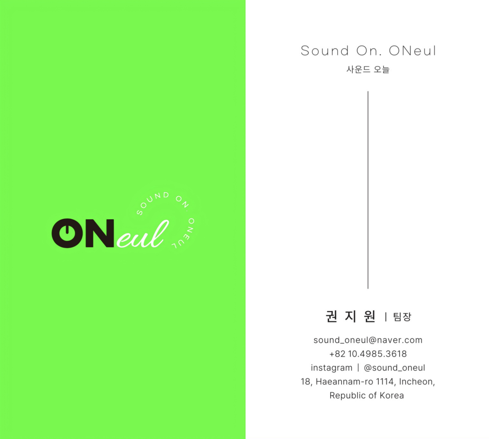
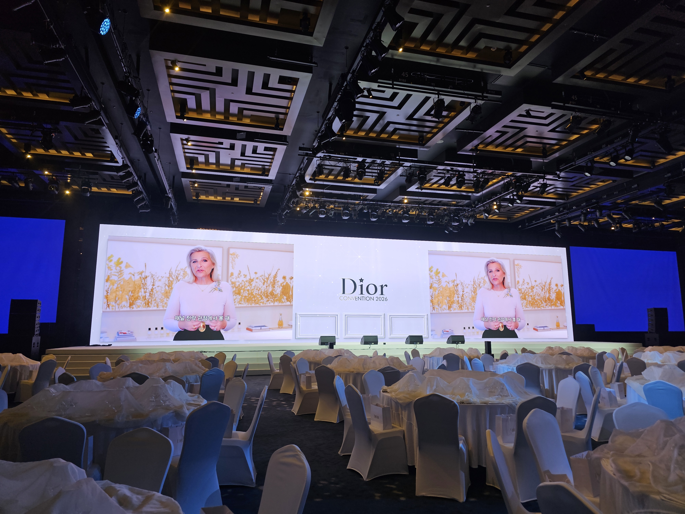

원본 로고
투명 PNG · 4168 × 1680 px
로고 내려받기 ↓ 프로필용 PNG ↓현장 기록 → 캡션 초안 → 검수 → 게시 준비. 하나의 현장에서 홈페이지와 인스타그램 콘텐츠를 준비하세요.
홈페이지와 인스타그램 콘텐츠 제작에 사용할 원본 로고·명함·현장 사진입니다.
투명 PNG · 4168 × 1680 px
로고 내려받기 ↓ 프로필용 PNG ↓
문의 010-4985-3618
sound_oneul@naver.com

공연·쇼케이스 / 기업 컨벤션 / 박람회·토크
사진을 확대하면 원본을 받을 수 있습니다.
상태를 바꿔도 인스타그램에 게시되거나 예약되지 않습니다. 홈페이지 반영 파일은 배포 담당자에게 전달해 주세요.
연결 대기 · 캡션 초안 작성은 사용 가능
실제 게시 예약과 통계는 계정 연동 후 사용합니다.
사운드 오늘 | 음향 장비 대여 · 현장 운영 공연 · 기업행사 · 축제 음향 상담 행사 날짜와 장소를 알려주세요. 문의 010-4985-3618
채널명: 사운드 오늘
검색용 ID: sound_oneul
문의 전화: 010-4985-3618
음향 장비 대여와 현장 운영, 사운드 오늘입니다.
안녕하세요, 사운드 오늘입니다. 원활한 상담을 위해 아래 내용을 남겨주세요. 1. 행사 날짜 / 리허설 시간 2. 행사 장소 / 실내·실외 3. 행사 종류 / 예상 인원 4. 필요한 장비와 운영 범위 확인 후 안내드리겠습니다. 전화 문의: 010-4985-3618
카카오 채널 공개·검색 허용과 상담 채팅이 설정되었습니다. 기본 상담 시간은 매일 09:00~18:00입니다. 첫인사·부재중 안내 메시지가 저장되었으며, 비즈니스 채널 인증은 아직 진행 전입니다. 공개 채널 보기 ↗